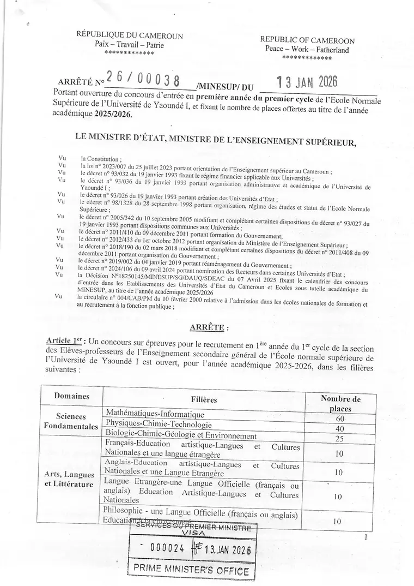
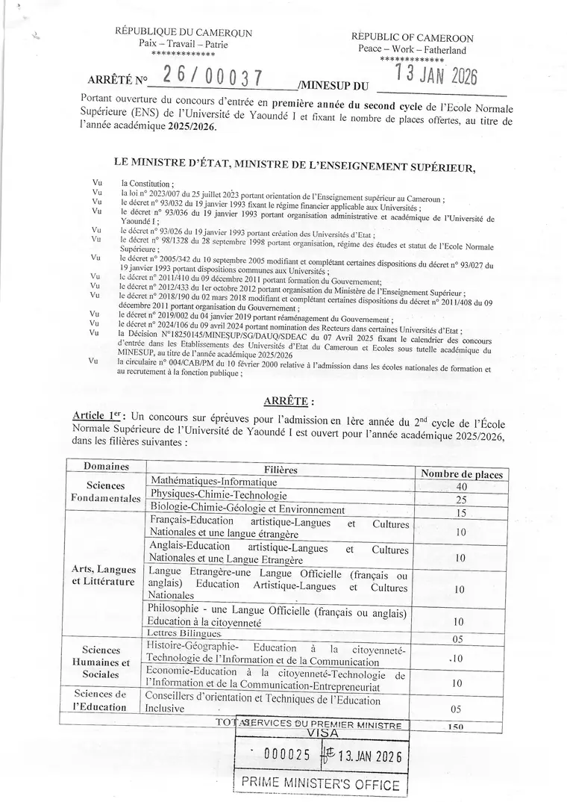

Texte de l'article
Le ministre d'État, ministre de l'Enseignement supérieur, a ouvert par deux arrêtés du 13 janvier 2026 le concours d'entrée en première année du premier et du second cycle de l'ENS de Yaoundé, au titre de l'année académique 2025-2026.
La filière qui comporte l'informatique s'intitule « Mathématiques-Informatique ». Elle offre 60 places au premier cycle et 40 places au second cycle.
L'essentiel pour la filière Mathématiques-Informatique
| Élément | Premier cycle | Second cycle |
|---|---|---|
| Arrêté | n° 26/00038/MINESUP | n° 26/00037/MINESUP |
| Places | 60 | 40 |
| Diplôme exigé | Baccalauréat scientifique ou GCE A/L in Sciences | Diplôme correspondant à l'option choisie ; licences professionnelles correspondantes admises |
| Âge (non-fonctionnaires) | 29 ans au plus au 1er janvier 2026 | 32 ans au plus au 1er janvier 2026 |
| Dépôt des dossiers | Au plus tard le vendredi 13 février 2026, à l'ENS (service de la scolarité) et dans les délégations régionales du MINESEC | |
| Épreuves écrites | Samedi 14 mars 2026 | Dimanche 15 mars 2026 |
| Centres | Bafoussam, Douala, Ebolowa et Yaoundé | |
| Épreuves | Mathématiques-Informatique (3 h, coefficient 4) ; culture générale (2 h, coefficient 2) | |
| Évaluation | Note de scolarité 25 %, épreuves écrites 75 % ; toute note inférieure à 5 sur 20 est éliminatoire | |
| Frais de concours | 20 000 FCFA, non remboursables | |
Pièces du dossier
- le formulaire d'inscription (ENS, délégations régionales du MINESEC, sites du MINESUP et de l'ENS) ;
- une photocopie certifiée de l'acte de naissance de moins de trois mois ;
- les relevés de notes certifiés : probatoire et baccalauréat (premier cycle), ou niveaux I, II et III de la licence (second cycle) ;
- une copie certifiée du diplôme exigé, ou de l'attestation de réussite, de moins de trois mois ;
- un certificat médical d'aptitude à la fonction d'enseignant, délivré par un médecin de l'Administration ;
- un extrait de casier judiciaire (bulletin n° 3) de moins de trois mois ;
- le reçu de paiement des 20 000 FCFA (Express Union, MTN Mobile Money ou CCA-Bank) ;
- une enveloppe A4 timbrée à l'adresse du candidat et deux photos d'identité 4 x 4 ;
- pour les fonctionnaires en poste, l'autorisation de leur ministre.
Résultats
Les résultats ont été publiés par le ministère de l'Enseignement supérieur le 5 avril 2026. Consulter la page des résultats du MINESUP.
Captures des arrêtés


Seuls les arrêtés officiels font foi. Les conditions changent chaque année : consultez l'arrêté de l'année en cours.
Source : MINESUP, concours d'entrée dans les ENS et ENSET au titre de l'année académique 2025-2026, consulté le 27 novembre 2026.